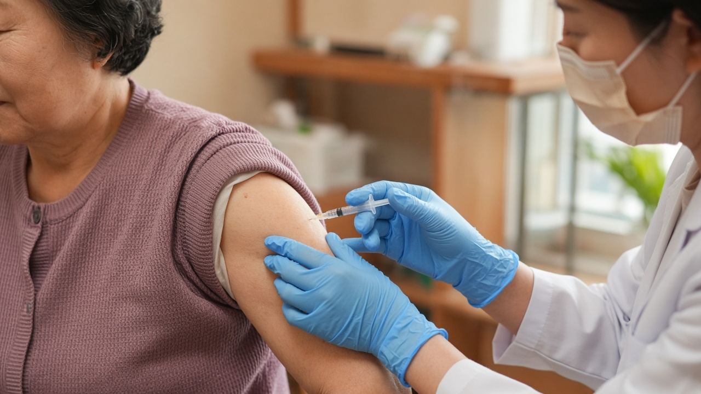
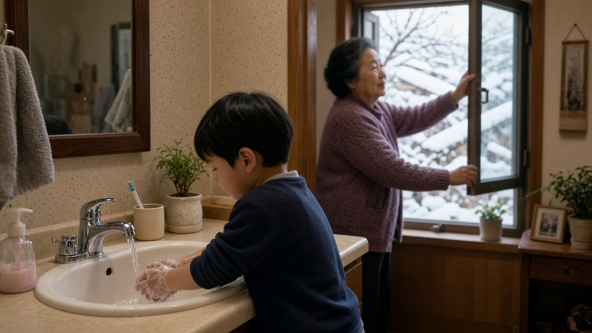

독감 입원환자 한 주 만에 926명, 65세 이상이 65.4퍼센트인데 어르신 접종 완료는 74.8퍼센트예요
요즘 주변에 열나고 기침한다는 분이 부쩍 많아졌죠.
특히 부모님이 아직 독감 주사를 안 맞으셨다면 지금 소식이 꽤 신경 쓰일 거예요.
질병관리청이 11월 20일 발표한 자료를 보면 이번 독감은 외래 환자뿐 아니라 입원 환자와 고령층 중증 환자가 눈에 띄게 늘고 있어요.
숫자가 무엇을 말하는지, 누가 서둘러야 하는지, 어디서 맞을 수 있는지 차례로 정리해 볼게요.
독감 입원환자는 얼마나 늘었나요?
전국 병원급 표본감시 의료기관 223곳의 인플루엔자 입원환자는 46주차인 11월 8일부터 14일까지 926명이었어요.
바로 전 주 639명에서 약 1.5배로 늘었고, 작년 같은 주 490명과 비교하면 약 2배 수준이에요.
최근 5주 흐름도 441명, 389명, 460명, 639명, 926명으로 막판에 가파르게 올라갔어요.
같은 기간 표본감시 기관에 신고된 인플루엔자 양성 사망 신고도 24건에서 44건으로 늘었어요.
다만 이 사망 신고는 숨지기 전 30일 안에 독감 확진 이력이 있었던 경우를 모두 센 것이라 독감이 직접 사망 원인인지는 따로 확인되지 않은 잠정 수치예요.

왜 65세 이상 어르신이 특히 위험한가요?
926명 입원환자 가운데 65세 이상이 606명으로 전체의 65.4퍼센트를 차지했어요.
이 606명은 지난 절기 정점이었던 2025년 48주차의 65세 이상 입원환자 329명보다도 많은 숫자예요.
외래에서 독감 의심 환자 비율은 오히려 65세 이상이 1000명당 12.5명으로 가장 낮았는데, 걸리는 비율은 낮아도 일단 걸리면 입원까지 가는 경우가 많다는 뜻으로 읽을 수 있어요.
질병관리청장도 입원환자가 1000명에 육박하고 고령층 입원과 양성 사망 신고가 늘어 예년보다 중증환자 발생이 이례적으로 높다고 설명했어요.
아이들 사이 유행은 어느 정도인가요?
의원급 의료기관에서 본 독감 의심 환자 비율은 46주차에 외래환자 1000명당 37.0명으로 4주 연속 올랐어요.
42주 17.7명에서 시작해 19.2명, 22.8명, 28.9명을 거쳐 37.0명까지 두 배 넘게 뛰었어요.
나이별로는 7세에서 12세가 98.9명으로 가장 높고, 13세에서 18세가 64.5명, 1세에서 6세가 46.6명으로 학령기 아이들이 유행의 중심이에요.
지금 돌고 있는 바이러스는 A형 H1N1pdm09로, 이번 절기 백신에 쓰인 바이러스와 비슷하고 치료제 내성에 영향을 주는 변이는 확인되지 않았다고 해요.
집에 학교 다니는 아이가 있으면 아이가 옮겨 온 독감이 조부모님께 이어질 수 있다는 점도 함께 생각해 두면 좋아요.

아직 안 맞았다면 어디서 무료로 맞을 수 있나요?
국가예방접종 대상은 65세 이상 어르신, 임신부, 생후 6개월부터 14세 이하 어린이예요.
어르신 기준은 1961년 12월 31일 이전 출생자이고, 지원 기간은 2027년 4월 30일까지라 지금 맞아도 늦지 않아요.
11월 19일 오후 6시 기준으로 65세 이상은 약 857만 명, 74.8퍼센트가 접종을 마쳤고 어린이는 약 296만 명, 59.8퍼센트에 머물러 있어요.
주소지와 상관없이 가까운 위탁의료기관이나 보건소에서 맞을 수 있고, 위탁의료기관은 예방접종도우미 누리집의 위탁의료기관 찾기나 관할 보건소 문의로 확인할 수 있어요.
병원마다 백신 보유 상황이 다를 수 있으니 방문 전에 전화로 접종 가능 여부를 먼저 물어보는 게 헛걸음을 줄이는 방법이에요.
질병관리청은 연례보고서를 근거로 예방접종이 연령에 따라 중증과 사망 위험을 최대 5분의 1 수준까지 낮출 수 있다고 설명하고 있어요.
접종 말고 생활 속에서 챙길 것은 무엇인가요?
흐르는 물에 비누로 30초 이상 손을 씻고, 기침할 때는 휴지나 옷소매로 입과 코를 가리는 게 기본이에요.
사람이 많이 모이는 실내에서는 마스크를 쓰고, 실내는 자주 환기해 주세요.
씻지 않은 손으로 눈, 코, 입을 만지지 않는 것도 생각보다 효과가 큰 습관이에요.
38도 이상 열이 나면서 기침이나 목 통증이 있으면 참지 말고 빨리 의료기관에서 진료를 받는 게 좋아요.
특히 어르신은 증상이 가벼워 보여도 빠르게 나빠질 수 있으니 가족이 한 번 더 챙겨 봐 주세요.
참고 자료 질병관리청 2026년 11월 20일 보도참고자료 인플루엔자 입원 중증환자 급증 신속한 예방접종 및 예방수칙 준수 당부, 질병관리청 예방접종도우미 누리집 2026에서 2027절기 인플루엔자 국가예방접종 안내
태그 독감 인플루엔자 독감입원환자 독감예방접종 어르신독감접종 독감무료접종 국가예방접종 질병관리청 예방접종도우미 호흡기감염병